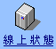

v1.1 Beta 2

所在目錄:
/Linux
(目前在第 1 頁，共 1 頁)
名稱
修改日期
大小
檔案說明
ftp.isu.edu.tw
義守大學檔案伺服器
回到上一層
CentOS
2018-12-03
1.50 KB
Debian
2007-01-29
4 Bytes
Fedora
2019-01-23
512 Bytes
kernel
2019-03-12
512 Bytes
LDP
2019-05-12
2.00 KB
Mandriva
2015-11-24
5 Bytes
Slackware
2018-03-12
1.00 KB
SuSE
2010-03-03
512 Bytes
換頁選單: 第
1
頁
共 8 個項目， 8 個資料夾、 0 個檔案、 0 個連結。
版面設計：
SATURN
、程式設計：
KTH